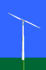
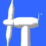
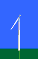
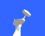

Wind
Turbines:
How many blades?

Why
Not an Even Number of Blades?
Modern wind turbine engineers avoid building large machines with
an even number of rotor blades. The most important reason is
the stability of the turbine. A rotor with an odd number
of rotor blades (and at least three blades) can be considered
to be similar to a disc when calculating the dynamic properties
of the machine.
 A rotor with an even number of blades will
give stability problems for a machine with a stiff structure.
The reason is that at the very moment when the uppermost blade
bends backwards, because it gets the maximum power from the wind,
the lowermost blade passes into the wind shade in front of the
tower.
A rotor with an even number of blades will
give stability problems for a machine with a stiff structure.
The reason is that at the very moment when the uppermost blade
bends backwards, because it gets the maximum power from the wind,
the lowermost blade passes into the wind shade in front of the
tower.
The
Danish Three-Bladed Concept
Most modern wind turbines are three-bladed designs with the rotor
position maintained upwind (on the windy side of the tower)
using electrical motors in their yaw
mechanism. This design is usually called the classical Danish
concept, and tends to be a standard against which other concepts
are evaluated. The vast majority of the turbines sold in world
markets have this design. The basic design was first introduced
with the renowned Gedser wind
turbine. Another characteristic is the use of an asynchronous
generator. You may read more about the Danish concept in
the articles section
of this web site.

Two-Bladed
(Teetering) Concept
Two-bladed wind turbine designs have the advantage of saving
the cost of one rotor blade and its weight, of course. However,
they tend to have difficulty in penetrating the market, partly
because they require higher rotational speed to yield the same
energy output. This is a disadvantage both in regard to noise
and visual intrusion. Lately, several traditional manufacturers
of two-bladed machines have switched to three-bladed designs.
 Two-
and one-bladed machines require a more complex design with a
hinged (teetering hub) rotor as shown in the picture, i.e. the
rotor has to be able to tilt in order to avoid too heavy shocks
to the turbine when a rotor blades passes the tower. The rotor
is therefore fitted onto a shaft which is perpendicular to the
main shaft, and which rotates along with the main shaft. This
arrangement may require additional shock absorbers to prevent
the rotor blade from hitting the tower.
Two-
and one-bladed machines require a more complex design with a
hinged (teetering hub) rotor as shown in the picture, i.e. the
rotor has to be able to tilt in order to avoid too heavy shocks
to the turbine when a rotor blades passes the tower. The rotor
is therefore fitted onto a shaft which is perpendicular to the
main shaft, and which rotates along with the main shaft. This
arrangement may require additional shock absorbers to prevent
the rotor blade from hitting the tower.

One-Bladed
Concept
Yes, one-bladed wind turbines do exist, and indeed, they save
the cost of another rotor blade! If anything can be built, engineers
will do it. One-bladed wind turbines are not very widespread
commercially, however, because the same problems that are mentioned
under the two-bladed design apply to an even larger extent to
one-bladed machines.
 In addition
to higher rotational speed, and the noise and visual intrusion
problems, they require a counterweight to be placed on the other
side of the hub from the rotor blade in order to balance the
rotor. This obviously negates the savings on weight compared
to a two-bladed design.
In addition
to higher rotational speed, and the noise and visual intrusion
problems, they require a counterweight to be placed on the other
side of the hub from the rotor blade in order to balance the
rotor. This obviously negates the savings on weight compared
to a two-bladed design.
© Copyright 2001 Soren Krohn. All rights reserved.
Updated 3 January 2001
http://www.windpower.org/tour/design/concepts.htm